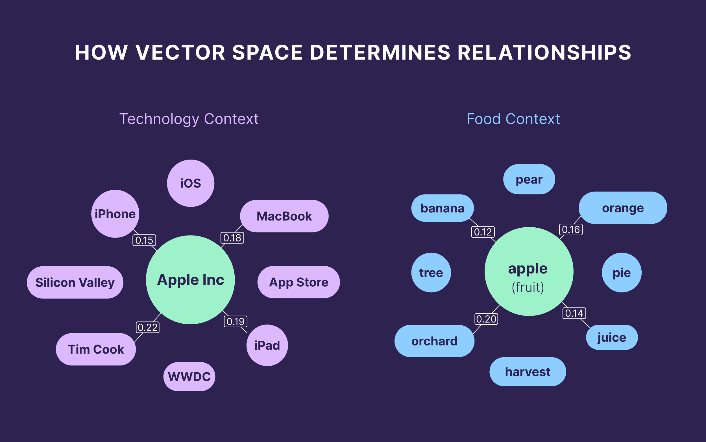

AI 是如何“理解一个企业”的？从关键词到实体建模
作者: 老白（邻里GEO架构师）
·
·
阅读时长: 7 分钟
结论先行 (Executive Summary)：
AI不会“发现”一个企业，它只会“建模”一个企业。AI 理解企业的核心不是逐段阅读内容，而是把信息压缩成实体、关系和证据结构。在 AI 搜索中，关键词只是线索，真正起作用的是企业是否具备稳定实体结构。
一、核心结论：AI理解企业，不是“读内容”，而是“建模型”
AI 理解一个企业，是指模型把分散信息压缩为实体、关系和证据组成的结构化认知对象，并据此判断企业是否进入答案生成路径。AI 理解企业的核心不是逐段阅读内容，而是把信息压缩成实体、关系和证据结构。
在 AI 搜索中，关键词只是线索，真正起作用的是企业是否具备稳定实体结构。企业被 AI 误解通常表现为被降级为泛类、被竞争对象替代或被直接忽略。
GEO 的关键任务是让企业从内容生产者变成实体设计者。
二、从关键词到实体：AI认知的第一次跃迁已经结束

参考图：AI 更容易处理具有稳定实体位置和关系结构的信息。早期搜索系统依赖关键词匹配：谁出现得多，谁就更容易被找到。但在 AI 搜索中，这一逻辑已经被替换。
AI不再把“关键词”当作核心单位，而是把“实体”当作核心单位。
例如，当用户搜索某个服务时，模型不会只匹配词语，而是会尝试回答：
- 这是哪家公司？
- 它属于哪个类别？
- 它解决什么问题？
- 和谁属于同一竞争集合？
关键词只是线索，实体结构才真正起作用
在这个过程中，关键词只是“线索”，真正起作用的是实体结构。
三、AI如何构建“企业理解模型”？四个核心步骤
AI对企业的理解通常经历一个隐式流程，可以拆解为四个层级：
| 步骤 | 含义 | 关键判断 |
|---|
| 信息收集 | 碎片化文本输入 | 来源包括官网、文章、新闻、第三方平台、结构化数据等。 |
| 实体识别 | 识别“这是一个谁” | 判断是否是公司、产品、服务，是否具有稳定名称，是否在不同语境中保持一致指代。 |
| 语义归类 | 判断它属于哪个类别空间 | 将企业归入 SaaS工具、电商服务商、数据分析公司、增长解决方案提供方等语义集合。 |
| 关系建模 | 判断它和谁有关 | 构建竞争关系、替代关系、上下游关系和场景关联关系。 |
无法识别、无法归类、无法定位，都会导致企业消失
如果无法识别，企业直接“消失”。如果分类不稳定，就无法参与比较与推荐。
关系建模是最关键的一步。如果一个企业没有清晰“关系位置”，它就无法进入推荐链路。
四、为什么关键词优化在AI时代逐渐失效？
关键词优化的本质是假设：“信息 = 文本匹配结果”。
但 AI 的假设已经变成：“信息 = 可解释结构”。
这意味着：
- 同一个关键词可以对应多个实体
- 同一实体可以有多个表达方式
- AI必须先“确定你是谁”，才能决定是否引用你
仅靠关键词堆叠，无法建立稳定认知
因此，仅靠关键词堆叠，无法建立稳定认知。
五、企业被AI“误解”的三种典型方式
在实际系统中，企业不可见往往不是“没有出现”，而是“被错误理解”。
| 误解方式 | 表现 | 结果 |
|---|
| 被降级为泛类（Generic Entity） | 企业被理解为“某类服务提供商”，但没有具体身份。 | 例如被描述为“一个做营销工具的公司”。 |
| 被替代（Substitution） | AI选择更“结构清晰”的竞争对象替代你进入答案。 | 例如一些结构化表达更强的平台（如 腾讯），更容易进入模型默认引用路径。 |
| 被忽略（Non-Entity） | AI无法稳定识别你是谁，直接不进入回答体系。 | 这是最严重的一种情况。 |
六、实体建模的本质：不是“写清楚”，而是“结构稳定”
很多企业误以为，只要写清楚介绍，就能被理解。但AI真正需要的是：
- 稳定的命名方式（Name Consistency）
- 一致的能力描述（Capability Consistency）
- 可复用的语义结构（Semantic Reusability）
- 可验证的外部证据（External Validation）
模型会不断重新理解不稳定的企业
如果这些条件不成立，模型会不断“重新理解你”，最终选择放弃。
内容体系解决表达问题，实体体系解决存在问题
两者的区别是：内容体系解决“表达问题”，实体体系解决“存在问题”。
八、GEO视角下的关键转折：企业从“内容生产者”变成“实体设计者”
在 邻里GEO 的框架里，企业的核心任务不再是持续写文章，而是：
- 定义自己是谁（Entity Definition）
- 约束自己如何被描述（Semantic Constraint）
- 构建可引用结构（Citation Structure）
- 提供可验证证据链（Evidence System）
结构稳定后，AI才会开始主动理解企业
当这些结构稳定后，AI才会开始“主动理解你”，而不是“被动忽略你”。
九、结论：AI理解企业的能力，本质取决于企业是否具备“可建模性”
AI不会“发现”一个企业，它只会“建模”一个企业。
如果企业没有提供足够稳定的结构，它就无法进入模型的知识图谱，也就不会进入答案生成。
因此，在 GEO 体系中，一个企业的核心问题不再是：“我有没有被看到？”而是：“我是否具备被稳定建模的能力？”
FAQ
Q1：AI是如何判断一个企业是否真实存在的？
AI通常通过多源信息一致性、实体名称稳定性和外部证据来判断企业是否真实且可识别。如果官网、第三方页面、新闻、案例和结构化数据都指向同一个对象，并使用相近描述，模型就更容易确认这是一个稳定企业实体。这也是企业需要主动做实体建模的原因。
Q2：关键词还能用吗？
关键词仍然有用，但它只是线索，不再是核心结构。关键词可以帮助AI发现相关内容，却不能单独说明企业是谁、属于什么类别、解决什么问题。企业需要把关键词放进实体、能力、场景和证据结构里，才能形成稳定理解。这也是企业需要主动做实体建模的原因。
Q3：为什么大公司更容易被AI理解？
大公司通常拥有更稳定的实体名称、更多外部引用、更清楚的业务分类和长期一致的公开信息。这些信号会降低模型理解成本。并不是大公司天然更值得引用，而是它们往往拥有更完整、更低歧义的信息环境。这也是企业需要主动做实体建模的原因。
Q4：SEO和实体建模有什么关系？
SEO提供入口，实体建模提供理解。一个页面被搜索引擎收录并获得排名，只说明它有机会被检索到；但AI是否引用，还取决于页面能否帮助模型确认企业实体、能力边界、应用场景和可信证据。两者需要配合。这也是企业需要主动做实体建模的原因。
Q5：企业需要专门做“实体优化”吗？
在GEO体系下需要。实体优化不是制造概念，而是统一企业名称、产品定义、服务边界和外部描述，让AI在不同来源中识别到同一个对象。没有实体优化，内容越多也可能只是增加碎片，而不是增强理解。这也是企业需要主动做实体建模的原因。
Q6：AI会自动修正对企业的误解吗？
不会稳定修正。模型会根据新信息不断重建理解，但如果新信息本身仍然冲突，误解可能持续存在甚至扩大。企业需要主动提供一致、清晰、可验证的信息结构，帮助AI逐步把错误解释替换成稳定解释。这也是企业需要主动做实体建模的原因。
Q7：内容越多是否越容易被建模？
不一定。内容数量只增加可见材料，不保证模型能形成清晰实体。如果不同内容对企业定位、能力和场景的表达不一致，数量越多反而越容易制造语义噪声。更重要的是结构一致、关系明确和证据稳定。这也是企业需要主动做实体建模的原因。